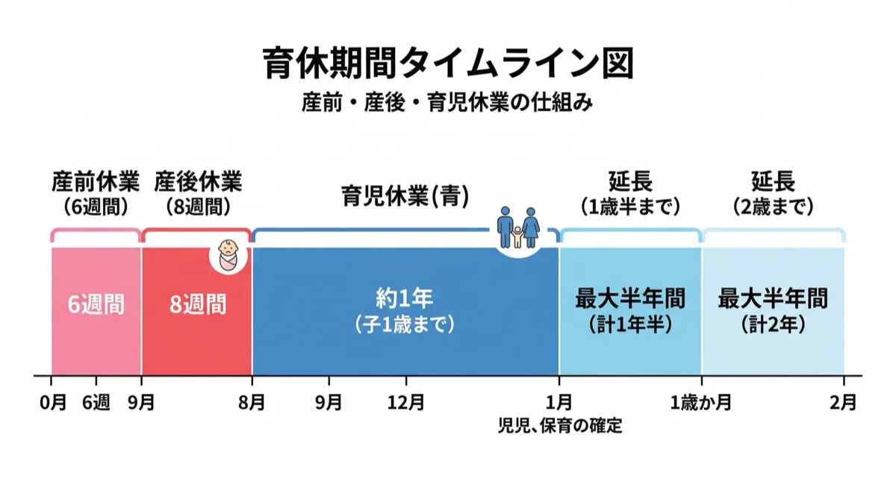

1. はじめに
「育休って結局いつまで取れるの？」「パパも育休を取れるって聞いたけど、仕組みがよくわからない」——育休制度は改正が続き、種類も条件も複雑で、混乱している方は少なくありません。
この記事では、育休制度の全体像を図解でわかりやすく整理します。産前産後休業との違い、もらえるお金、パパの育休、世田谷区の保育園申し込みとの関係まで、これ1記事で育休の基本がすべて分かります。
・育休はいつからいつまで取れるか（原則・延長・パパママ育休プラス）
・産前産後休業と育児休業の違い
・育休中にもらえるお金（給付金・社会保険料免除）
・パパの育休（産後パパ育休）の基本
・世田谷区の保育園申し込みとの関係
2. 育児休業制度とは
育児休業（育休）とは、1歳未満の子どもを養育するために、労働者が会社に申し出ることで取得できる休業制度です。育児・介護休業法に基づく権利で、会社が拒否することは原則できません。
取得できる期間
- 原則：子どもが1歳になるまで（産後休業終了翌日から）
- 延長①：1歳6ヶ月まで（保育園に入れないなど一定の条件あり）
- 延長②：2歳まで（1歳6ヶ月時点でも保育園に入れない場合）
- パパママ育休プラス：1歳2ヶ月まで（両親ともに育休を取得する場合）
「育休は1年間」というイメージを持つ方が多いですが、条件次第で1歳6ヶ月・2歳まで延ばせます。また、パパとママが一緒に育休を取ると1歳2ヶ月まで取得できる「パパママ育休プラス」という制度もあります。
3. 図解：育休の全体タイムライン
育休の流れを図で確認しましょう。産前休業から始まり、産後休業・育児休業・延長と続きます。

育休タイムライン（簡易図）
※バーの長さは目安です
4. 産前産後休業と育児休業の違い
「産休」と「育休」はよく混同されますが、法律上は別の制度です。主な違いを整理します。
| 項目 | 産前産後休業（産休） | 育児休業（育休） |
|---|---|---|
| 対象者 | 女性のみ | 男女ともに取得可能 |
| 期間 | 産前6週間・産後8週間 | 原則、子が1歳になるまで |
| 強制・任意 | 産後6週間は強制（本人希望でも就業不可） | 取得は任意（申し出が必要） |
| 給付金 | 健康保険から出産手当金（給与の約2/3） | 雇用保険から育児休業給付金（給与の50〜67%） |
| 社会保険料 | 免除 | 免除 |
産後休業が終わった翌日から、育休がスタートします。「産休明け＝育休開始」とイメージしておくとわかりやすいです。パパの場合は産後休業がないため、出産翌日から育休を取得できます。
5. 育休を取れる条件
育休は、雇用形態によって取得条件が異なります。
正社員・無期雇用労働者
会社規模・業種・勤続年数を問わず申し出が可能です（一部の労使協定がある場合を除く）。
パート・契約社員・派遣社員
✅ 同じ会社に1年以上継続して雇用されていること
✅ 子どもが1歳6ヶ月になるまで契約が続く見込みがあること
※ 会社と労働組合が結ぶ労使協定によって、入社1年未満の従業員を育休の対象外とすることができます。まず人事部に確認しましょう。
自営業・フリーランス
育児・介護休業法は雇用関係にある人を対象とした法律のため、自営業者・フリーランスは対象外です。ただし、国民年金の産前産後期間の保険料免除制度など、別途利用できる制度があります。
6. 育休中にもらえるお金
育休中の最大の不安は「収入が途絶えること」です。しかし、育休中には以下の給付・免除があります。
育児休業給付金
雇用保険から支給される給付金です。育休を取得する前の給与（賃金月額）をもとに計算されます。
| 育休開始からの期間 | 支給額 |
|---|---|
| 育休開始〜180日目（約6ヶ月） | 休業前給与の67% |
| 181日目以降 | 休業前給与の50% |
育休前の2年間に、雇用保険の被保険者期間が12ヶ月以上あること。パート・契約社員でも雇用保険に加入していれば受給できます。
詳しい計算方法・申請方法については、別記事「育児休業給付金 完全ガイド」をご覧ください。
社会保険料の免除
育休中は、健康保険と厚生年金保険の本人負担分・会社負担分がともに免除されます（2022年10月改正）。月またぎで14日以上育休を取得した月も免除対象になりました。
給付金（67%）＋社会保険料免除を合わせると、手取りベースで育休前の約8割程度を維持できるケースが多いです（個人の収入・扶養状況により異なります）。
7. パパの育休
2022年10月の育児・介護休業法改正で、パパの育休制度が大きく変わりました。
産後パパ育休（出生時育児休業）
子どもの出生後8週間以内に、最大4週間（28日）まで取得できる制度です。育児休業とは別に取得でき、分割して2回に分けることもできます。
| 項目 | 内容 |
|---|---|
| 取得できる時期 | 子どもの出生後8週間以内 |
| 取得できる期間 | 最大4週間（28日） |
| 分割取得 | 2回まで分割可 |
| 給付金 | 育児休業給付金と同様（給与の67%） |
| 申請締切 | 取得の2週間前までに申請 |
パパママ育休プラス
パパとママの両方が育休を取得する場合に、育休期間の終点を子が1歳2ヶ月になるまで延長できる制度です。ただし、各自の取得期間の上限は原則1年間（変わらない）点に注意してください。
詳しくは別記事「パパママ育休プラスとは？図解でどこよりもわかりやすく解説」をご覧ください。
8. 育休と保育園申し込みの関係（世田谷区）
育休中に保育園を申し込む場合、いくつか重要なポイントがあります。
育休中の申し込みは「育休中の場合」で申請
世田谷区の保育園申し込みでは、現在育休中であることを申告します。育休中は就労証明書の代わりに「育休中の就労証明書（復職予定を明記したもの）」が必要になります。
復職期限と入園時期の関係
・育休中に4月入園を申し込む場合：4月から認可保育園に入園できれば、4月末までに復職することが求められます。
・途中入園の場合：入園月の翌月末までに復職することが原則です。
・復職しない場合は、退園になる可能性があります。
育休延長を使うと申し込みのタイミングが変わる
育休を1歳6ヶ月・2歳まで延長している場合、入園申し込みのタイミングや希望入園月が変わります。パパママ育休プラスで1歳2ヶ月まで延長している場合も同様です。
保活のスケジュール全体については、別記事「保活スケジュール完全ガイド」で詳しく解説しています。
世田谷区の保育園 空き状況を確認しよう
育休明けの入園に向けて、希望の保育園に空きがあるか今すぐチェック。
9. よくある質問
Q. 育児休業はいつからいつまで取れますか？
原則として子どもが1歳になるまで取得できます（産後休業終了翌日から）。保育園に入れないなどの場合は1歳6ヶ月、さらに2歳まで延長可能です。パパとママ両方が育休を取る「パパママ育休プラス」では、1歳2ヶ月まで育休期間の終点を延ばすことができます。
Q. パート・契約社員でも育休は取れますか？
一定の条件を満たせば取得できます。入社1年以上であること、かつ子が1歳6ヶ月になるまで契約が続く見込みがあることが主な条件です。会社と労働組合の労使協定によって取得できない場合もあるため、まず人事部に確認してください。
Q. 育休中はお金をもらえますか？
はい。雇用保険から「育児休業給付金」が支給されます。育休開始から180日間は給与の67%、それ以降は50%が支給されます。また育休中は社会保険料（健康保険・厚生年金）が免除されるため、実質的な手取りは思ったより減らないケースが多いです。